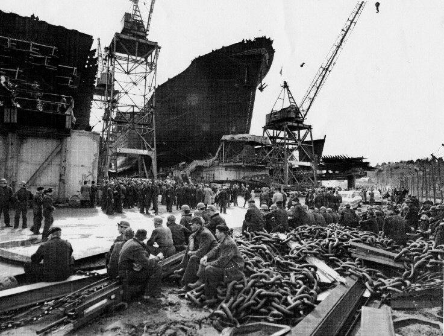
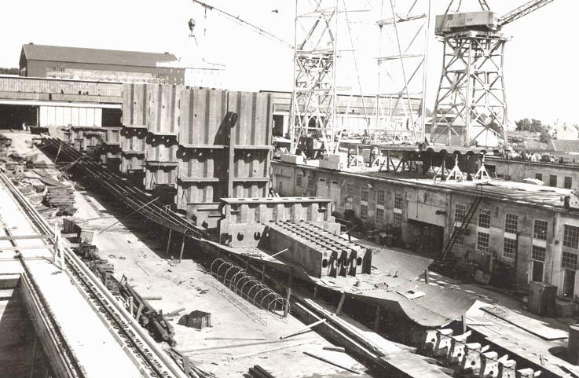
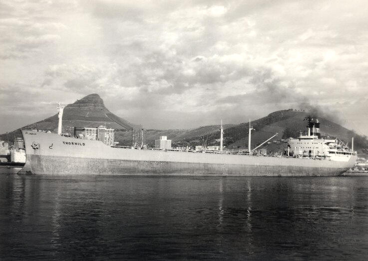

O.T. Tønnevold
Fra seil til moderne skipsfart

O.T. Tønnevold AS er et rederi med lange tradisjoner i Grimstad Vi vil her presentere noen av båtene og de som har drevet rederiet opp gjennom tidene.
Det hele begynte i seilskutetiden. Barken Lalla Rookh ble bygd i 1876 og var i Tønnevolds eie fra 1905 til 1915. Skipet seilte helt til 1930
Skal det være en brigg i klasse A2, så gjelder det å slå til - men det var for 125 år siden !!! Briggen Fatum var første skip O.T. Tønnevold var disponerende reder for.
Grunnlaget for rederidriften var tømmerhandel som hadde et bredt omfang med eksport over Grimstad. Treskipsverftene anvendte også store mengder materialer. Seilskuter fra Grimstad fant du i alle havner. Her fra Newcastle
Utskipning av trelast Puget Sound i 1905
Utskiping av trelast i staten Washington i 1905
Stålbarken BØLGEN , kjøpt 1911 for 2950 pund, Bølgen ble solgt i 1924. Det var det siste seilskipet i rederiet.
Mannskapet på bark "Bølgen" - tatt i 1924.
Fullriggeren Siam for fulle seil (Maleri). Bygget i Vegesack i 1889, Kjøpt 1908 og solgt i 1923.
Besetningen på Siam - Tatt i Rangoon ca 1918.
Dekket på fullriggeren "Siam".
"Siam" i Hamburg havn august 1921. Ved siden ligger den danske barken "Sterna". Skipene ligger i opplag under depresjonstiden. Seilskutene var fine å se på, men utviklingen krevde snart større og raskere skip.
Et seilskip bukseres på Themsen 1925.
Skip med unionsflagg i London i 1898.
Mannskapet på "Socotra". Båten forliste under første verdenskrig.
Livet på seilskipene kunne være svært tøft når det stormet som dette.
Noen ganger endte seilasen på denne måten. Bildet er tatt i 1909.
Skip under bygging krever mange folk. Dette bildet fra 1902 er fra Hasseldalens jernskipsbyggeri i Grimstad.
Det sjøsettes stadig nye båter. Bildet er fra Uddevallavarvet
- og nye båter pløyer havet. Her er Dampskipet " Thordis" i storm på Atlanteren i 1923
Mannskapet på "Thordis" . Tatt i Hamburg i 1921
Offiserer på TT Thorunn i 1953 i stramme uniformer.
Livet ombord kan ha mange variasjoner - fra surring i full stom -
- til klesvask på dekk
Livbåtdrill er en viktig del av sikkerheten til sjøs. Her er et lag fra kjøleskipet Thorunn i livbåten.
På broa er det alltid noen som følger med og passer på. Det kreves dyktige folk og nøyaktige instrumenter.
MS Thorgull bygd 1982 for Tønnevold, er et OBO-skip. Solgt i 1986. Nye skip er effektive, men det er ikke alle som synes at de er så flotte å se på som de gamle seilskutene
Det er lagt større vekt på lasteevne og volum. Dette er lasterommet til OBO-skipet Thorhild - bygget i 1979 for Tønnevold. Solgt i 1988.
Her klargjøres rommet for ny last. OBO - skip kan ta både fast last - som kull - og flytende last - som olje.
Om båten er stor er det ikke mye plass igjen å boltre seg på - mellom alle rørene på et OBO-skip. Dette er på Thorhild bygd 1979.
MS Thorndale bygd i 1981 Skipet seilte for Tønnevold fra 1997 til 2001
Moderne "Container-skip" følger opp gamle tradisjoner i rederiet. Maersk Toledo er Norges største containerskip og tar ca 4000 containere. Skipet er bygget i 1985, kjøpt i 2000 og seiler enda (i 2005) for Tønnevold.
MS Tor Cimbria, bygd 1986. Kjøpt 2002.
MS Maersk Rimini, bygd 1990, kjøpt 2004.
MS Thorbjørg bygd i 1993. Kjøpt i 2005.
Mange av Tønnevolds båter har fått navnet Thorhild. Det er en tradisjon å beholde navnet selv om båtene skifter gjennom tidene.
DS Thorhild kontrahert i 1919 og levert i april 1921. Skipet var på 4100 tonn dødvekt, og ble overtatt samtidig som depresjonen etter første verdenskrig satte inn for fullt. Halvparten av den norske flåte lå da i opplag

Det er litt andre dimensjoner over denne Thorhild. Det er et OBO-skip, registrert i Singapore
Her er en ny Thorhild i ferd med å ta form på beddingen på Rosenberg Mek. Verksted.
En ny Thorhild er under bygging. Rosenberg Mek. Verksted

Det er store dimensjoner i maskineri og propell som skal drive et moderne skip.
Nye Thorhild bygges stadig - og gjøres klar til sjøsetting. Her fra Rosenberg i Stavanger i 1956
- Og her fra Gøtaverken i Gøteborg 1935
En ny MT Thorhild sjøsettes i Gøteborg 1935
Og så skal MT Thorhild på prøvetur utenfor Gøteborg 1935
MT Thorhild 1935. Klar til oppgaver "på de 7 hav" for OT Tønnevold. Skipet ble solgt i 1954
MT Thorhild bygd 1956. Solgt i 1971
MT Thorhild bygd 1964. Kjøpt i 1973 og solgt i 1974
MT Tiberius bygd 1966 for Wilh. Wilhelmsen ble overtatt av Tønnevold 1976, og gitt navnet Thorhild - det var det femte skip i Tønnevolds historie med dette navnet. Overtagelsesprisen var 28 millioner kroner. Skipet ble solgt i 1978
MS Thorhild (OBO-skip) bygd 1979. Solgt i 1987.
MS Thorhild bygd 1983. Kjøpt i 1995, solgt i 2005.
Gården Tønnevold ved Grimstad ble i året 1800 kjøpt av Ole Børresen. Han var bestefar til O.T. Tønnevold som drev gårdsbruk og startet forretningsvirksomhet i Grimstad. Den 29/9 1875 tok han ut ha handelsborgerskap i Grimstad som ble starten på hans handels- og rederivirksomhet.
"Gutta på tur". Brødrene Rasmus, Thomas og Olaf Tønnevold på biltur til Gøteborg i 1935 i forbindelse med overtakelse av et nytt skip.
Flyfoto av Tønnevold gård ved midten av 1950-årene mens den enda var i full drift som gårdsbruk. Den ble da drevet av Ole Tønnevold som moderniserte driften, og oppførte større drivhus for produksjon av grønnsaker og planter.
Hjemme hos Gyda og Thomas Tønnevold da de bodde på Fagerlund. Bildet er tatt omkring 1910.
Mor Gunhild med datteren Gusta Cecilie, sønnen Ole og hans kone Gunhild f. Johnsen. Trolig tatt i 1875.
O.T. Tønnevold fikk St. Olavs orden for samfunnsgavnlig virke. Det ble imidlertid sterk nedgang for skipsfarten etter den første verdenskrig - særlig gikk det ut over seilskipsfarten O.T. Tønnevold døde i januar 1926
På O.T. Tønnevolds 70-års-dag 6.mai 1918 ble det opprettet et legat med formål drift av en teknisk skole i Grimstad. Grunnlaget for Sørlandets Tekniske Fagskole (Tønnevolds Legatskole) var en donasjon på kr.400.000 . Skolen har hatt stor betydning for bl.a. maskinistutdanning og den videre utvikling av det tekniske skolemiljøet i Grimstad.
Olaf Tønnevold, født i 1888 var sønn av Gunhild og O. T. Tønnevold. Han overtok Tønnevold gård og var, sammen med sin bror Thomas, med i ledelsen av rederiet etter farens død.
Thomas Tønnevold var sammen med sin bror Olaf med i ledelsen av rederiet etter farens død.s
Johan Tønnevold overtok ledelsen av rederiet sammen med sin bror Leif etter farens død i 1960
Leif Tønnevold var sammen med sin bror Johan med i ledelsen av rederiet etter farens død i 1960.
Jan Olaf Tønnevold overtok ledelsen av virksomheten i 1988